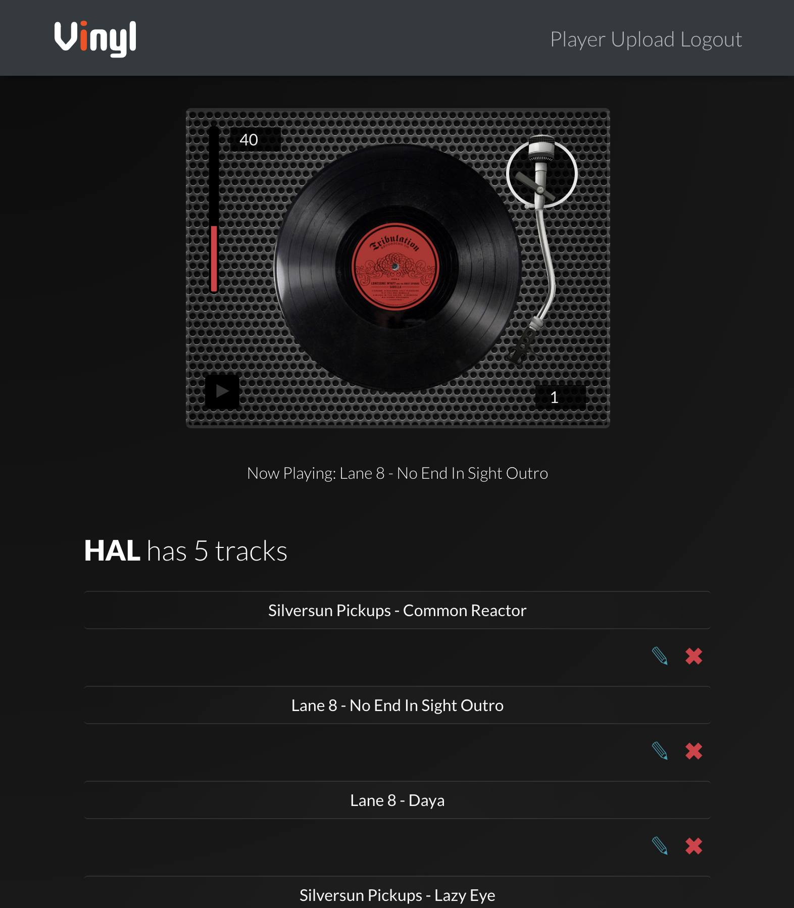
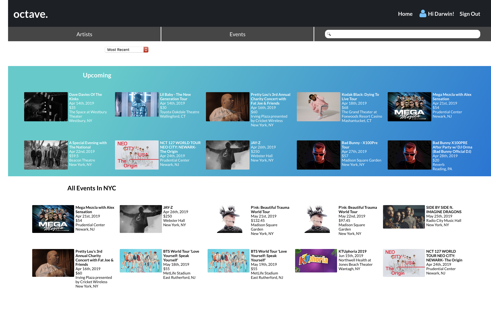
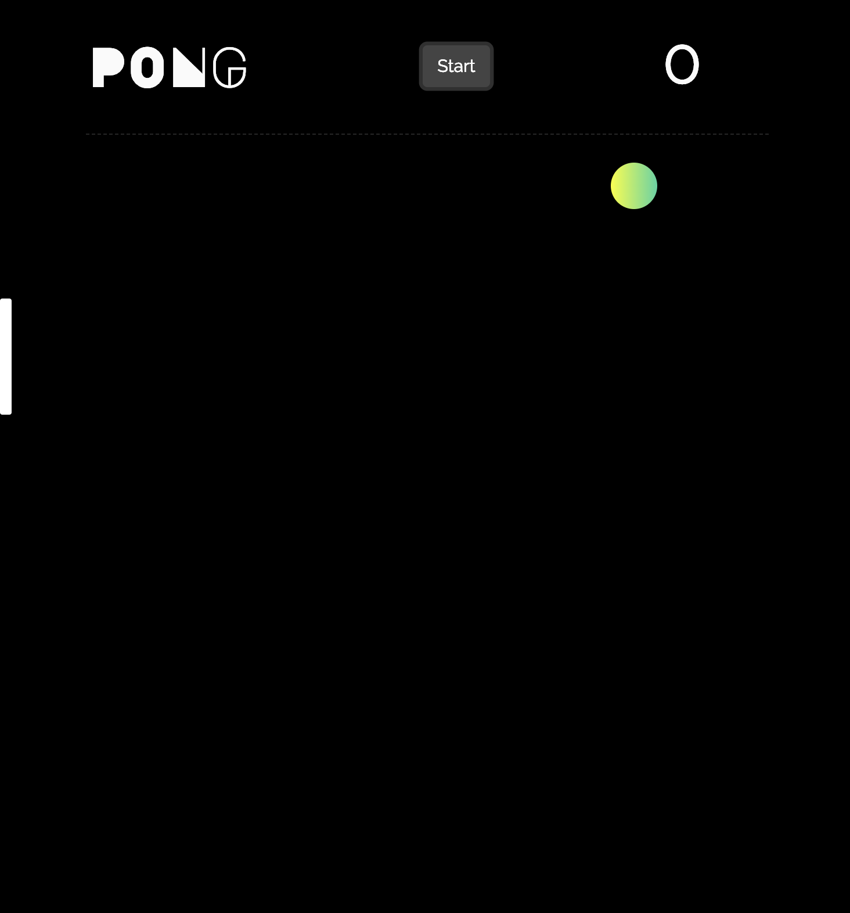
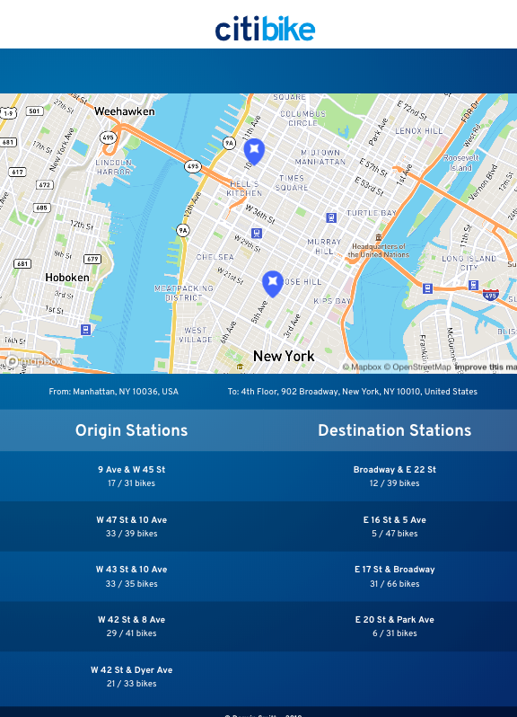
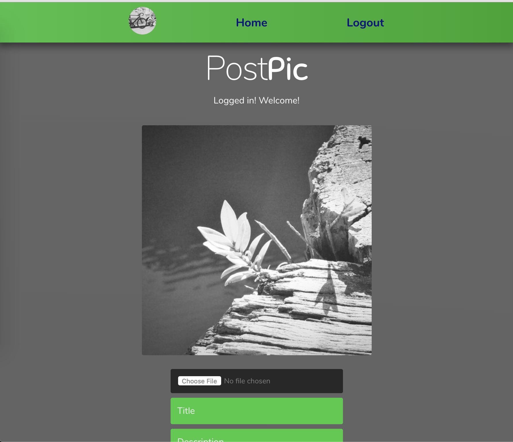
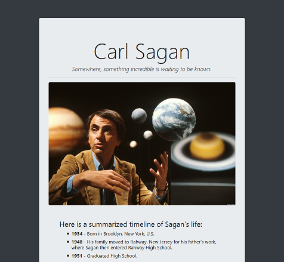
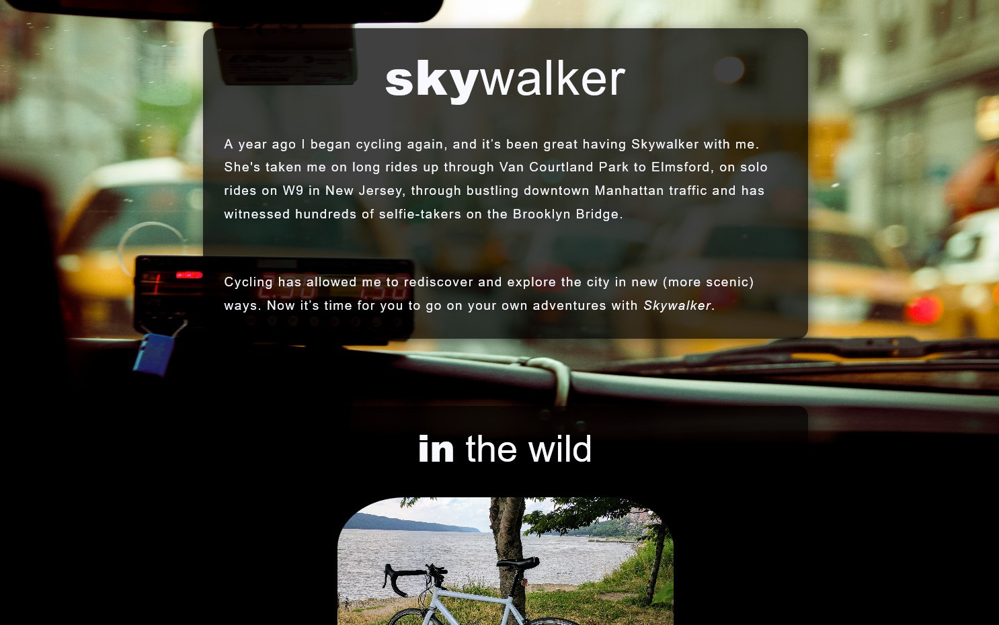
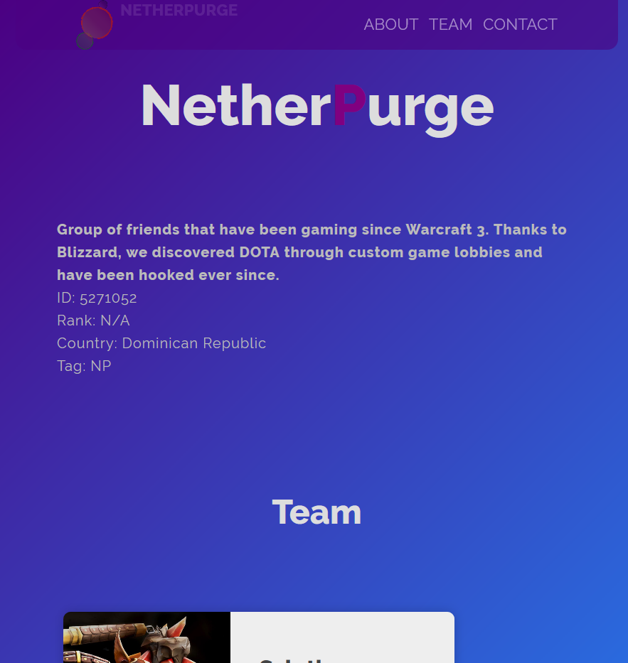
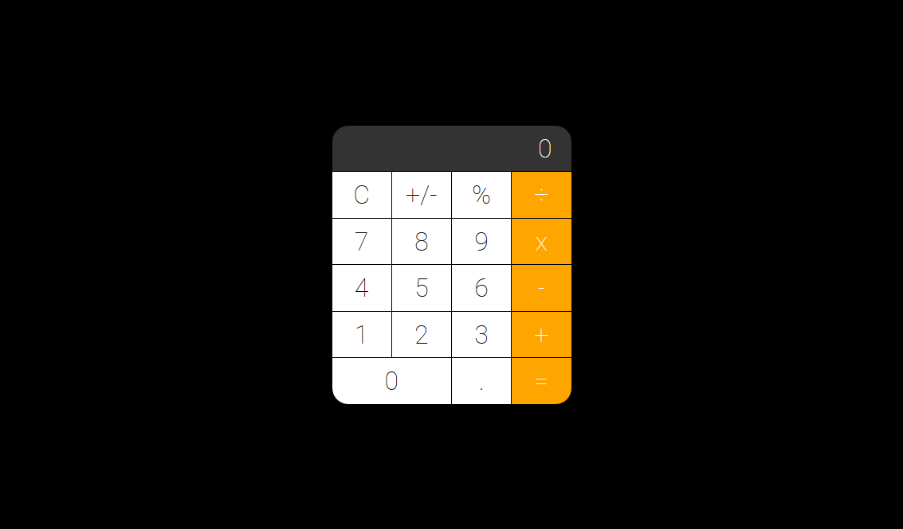
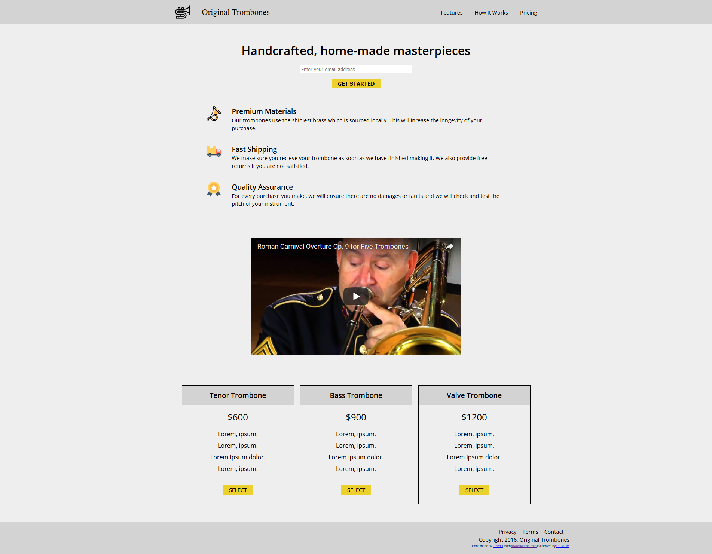

Web
Developer
New York City based Full Stack Developer, with a background in Law, Human Rights, and experience in the Service and Hospitality industry. I am passionate about quality, efficiency and effective problem-solving.
Anything I do, I do to the best of my abilities and circumstances. I am determined, detail-oriented, and excited to make the world and the web a better place.
Skills & Tools
-
HTML5
-
CSS3
-
JavaScript (ES6)
-
jQuery
-
React
-
Express.js
-
PostgreSQL
-
Git
-
Github
-
Slack
-
npm
-
Ruby
-
AWS
-
Node.js
Projects
-
 Vinyl, a CRUD app, built with an Express server and a React front-end. The UI controls are custom made and controlled with state. Tracks are uploaded through the express server to an AWS S3 Bucket.
-
 A collaborative React App built with Express on Node.js and accessing data from the Ticketmaster API. Design based off a mock-up from a UI/UX design team of students at General Assembly.
-
 Built a one player version of the classic arcade game Pong in vanilla JavaScript during the Web Development Immersive (WDI) course at General Assembly. Wrote custom collision detection responsive to browser size and mobile devices.
-
 React App with custom CSS (Flexbox and Grid), using Mapbox and Google Maps Geocoding API powered inputs. Lots of love, too.
-
 React App on Express (node.js) server. This project was built to mimic web-apps/apps such as Instagram.
-

Designed and built a static website for a non-profit working with underpriviledged children in the Dominican Republic.
-

Created a Carl Sagan tribute website using Bootstrap 4 on CodePen while completing the Front-End Development Course on FreeCodeCamp.
-

Skywalker was one of my first websites I made from scratch with only HTML5 and CSS3. It also exemplifies my passion for my favorite hobby other than coding: Cycling.
-

Made Netherpurge while experimenting on new techniques for navbars and CSS3 animations. The small line that pops up on hover was made with pseudo elements (::before & ::after). Used span tags to create different effects within lines of text, linear gradients, and using transparency were among other things I practiced while creating Netherpurge.
-

Created all buttons with an unordered list and added styles to make them look like such. Positioning was a bit tricky but helped me improve my CSS skills. JavaScript is what powers the actual functionality of the calculator. Event Listeners and functional programming was key for this project.
-

Created a mockup of a Product Landing Page for freeCodeCamp Web Develeopment course. Used plain CSS to style all form and HTML elements, used SVG's for icons, included a YouTube video with an iframe tag for the first time, applied FlexBox and CSS Grid for layout, as well as media queries for Responsiveness.